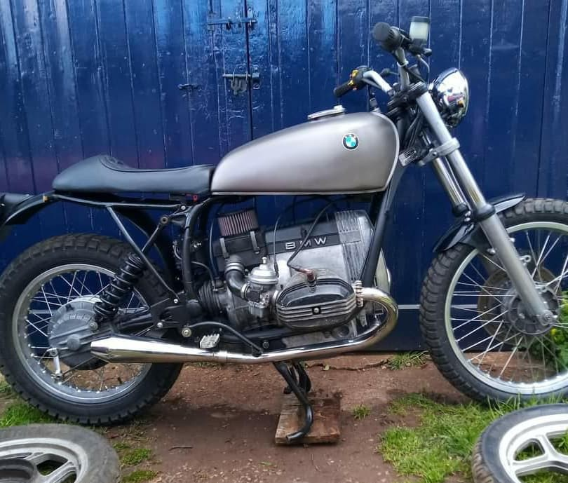

Spoked Conversion Hubs.
Designed and built in the UK.
Hubs are deigned to be a direct replacement for the cast alloy hubs found on BMW r100s and R80s. These hubs are designed to allow monolever BMWs to be built up as either offroad g/s type bikes or for cafe racers to achieve the classic look.
CNC machined from billet aluminium with a cast iron brake surface, these hubs allow the front and back wheels to run in line with the centre of the bike. This aspect of the hub design is crucial if you are touring or road racing and you want your bike to handle and brake well.
Some hubs converted from other BMWs have to have their spokes bent into shape to fit a conventional rim which results ultimatley in the rim cracking between the spoke holes. This may be OK for show bikes but will not do if the bikes are intended to be used. There is no machining needed to your standard components on the bike .
Standard calipers and discs are used on the front. Just unbolt the discs from your cast wheel and bolt them to your AMW hub. You can retain your stock through bolts or use the AMW button headed bolts as the AMW hub holes are threaded ready for their installation.
The rear hubs just bolt into place using the standard wheel bolts or the 55mm long bolts from the K series bikes. The rear hub retains the 40 hole set up or 36 hole hubs can be ordered. Standard 80 g/s rims can be used.